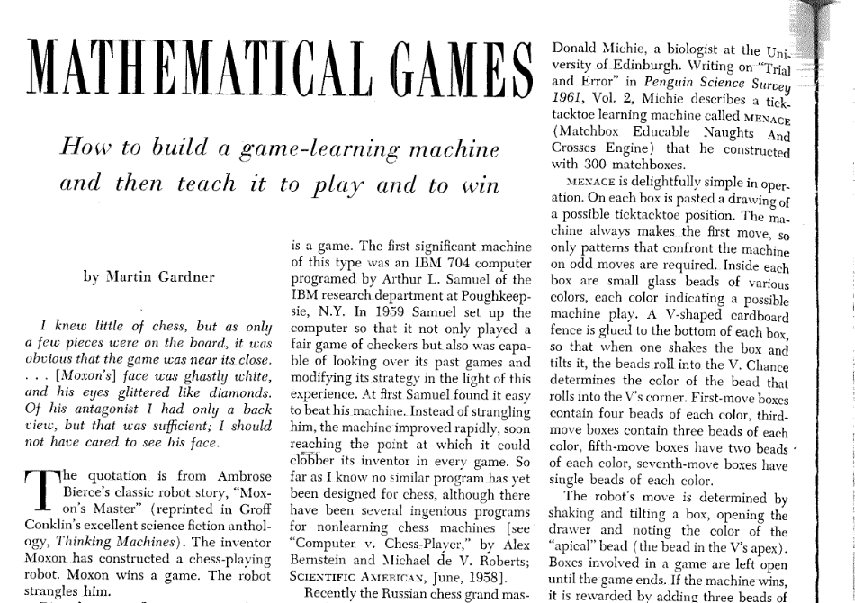
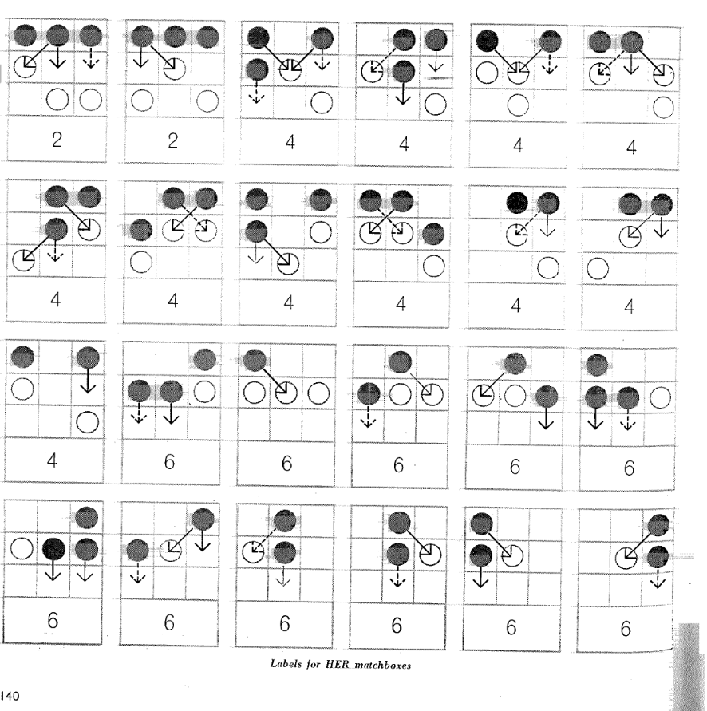

Reinforcement Learning Basics
Reinforcement learning basics: how an agent learns by trial and error, its components, policies, exploration vs exploitation, Markov decision processes and early algorithms.

Reinforcement learning is a type of machine learning that allows agents to learn how to behave in an environment by trial and error. The agent is rewarded for taking actions that lead to desired outcomes and penalized for taking actions that lead to undesired outcomes. Over time, the agent learns to take actions that maximize its expected reward.
Reinforcement learning is a powerful tool for solving sequential decision-making problems in a wide range of domains, including robotics, control systems, finance, and gaming. It has been used to train robots to walk, cars to drive themselves, and AI agents to play games at a superhuman level.
Table of Content
- Reinforcement Learning
- Table of Content
- Abstract
- Early History
- Mathematical Games
- Components of RL
- Key Concept in RL
- Policies
- Challenges
- Exploration vs. Exploitation:
- Markov Decision Processes (MDPs)
- Early RL Algorithms
- Types of Algorithms
- Training Algorithms: PPO vs SAC
- what are some benefits and drawbacks of each approach?
- Which algorithm is better?
Abstract
Imagine a robot that is trying to learn how to walk. The robot has a number of different actions that it can take, such as moving its legs forward, backward, or to the side. The robot's goal is to reach a target location without falling down.
:no_upscale():format(webp)/cdn3.vox-cdn.com/uploads/chorus_asset/file/8825373/deepmind_parkour.gif)
The robot starts by taking random actions. If the robot takes an action that leads it closer to the target location, it is rewarded. If the robot takes an action that leads it further away from the target location or causes it to fall down, it is penalized.
Over time, the robot learns to take actions that maximize its expected reward. This means that the robot learns to walk in a way that is both efficient and safe.
Reinforcement learning is a powerful tool for solving sequential decision-making problems, but it can also be challenging to implement. One of the main challenges is that reinforcement learning algorithms can be very sample-inefficient. This means that they may require a large amount of data to train.
Another challenge is that reinforcement learning algorithms can be sensitive to hyperparameter tuning. Hyperparameters are parameters that control the behavior of the algorithm, such as the learning rate and the exploration rate. It is important to tune the hyperparameters carefully to ensure that the algorithm performs well.
Early History
Mathematical Games
In this paper from 1960: http://cs.williams.edu/~freund/cs136-073/GardnerHexapawn.pdf


Components of RL
In RL, there are three main components:
| Component | Description |
|---|---|
| Agent | The learner or decision-maker. |
| Environment | The external system with which the agent interacts. |
| Reward Signal | A numerical signal that tells the agent how well it's doing in the environment. |
Key Concept in RL
Here is a brief overview of the key concepts in RL:
| KeyConcept | Description |
|---|---|
| Agent | The agent is the entity that learns and acts in the environment. |
| Environment | The environment is the world in which the agent interacts. It provides the agent with observations and rewards. |
| State | The state is the agent's representation of the environment. It is typically a vector of values that represent different aspects of the environment. |
| Action | An action is a command that the agent can send to the environment. The action typically changes the state of the environment. |
| Reward | The reward is the agent's feedback from the environment. It is typically a scalar value that indicates how well the agent is performing. |
| Policy | The policy is a function that maps from states to actions. It tells the agent what action to take in any given state. |
| Value function | The value function is a function that maps from states to expected rewards. It tells the agent how good it is to be in a given state. |
Policies
A policy in reinforcement learning is a function that maps from states to actions. It tells the agent what action to take in any given state. The goal of reinforcement learning is to learn a policy that maximizes the agent's expected reward over time.
Policies can be either deterministic or stochastic. A deterministic policy always returns the same action for a given state. A stochastic policy returns a probability distribution over actions for a given state.
Most reinforcement learning algorithms learn stochastic policies. This is because stochastic policies are more robust to uncertainty in the environment. They can also be used to learn more diverse and exploratory policies.
Here are some examples of policies in reinforcement learning:
- A policy for a robot to walk might tell the robot to move its left leg forward, then its right leg forward, and so on.
- A policy for a car to drive itself might tell the car to turn the wheel left, then right, and so on.
- A policy for an AI agent to play a game might tell the agent to move the cursor up, then down, then left, and so on.
Policies can be learned using a variety of reinforcement learning algorithms. Some of the most popular algorithms include Q-learning, policy gradients, and actor-critic methods.
Once a policy has been learned, it can be used to control the agent's behavior in the environment. The agent can simply execute the action that is recommended by the policy in the current state.
Policies are a key part of reinforcement learning. They allow agents to learn how to behave in an environment by trial and error. By learning a good policy, an agent can maximize its expected reward over time.
Challenges
RL faces challenges such as the exploration-exploitation trade-off (1950s) and the curse of dimensionality (1960s), which became more apparent with the growth of AI research.
Exploration vs. Exploitation:
One of the fundamental challenges in RL is balancing exploration (trying new actions) and exploitation (choosing known good actions).
Markov Decision Processes (MDPs)
Early RL Algorithms
Types of Algorithms
RL algorithms can be categorized into:
- Model-Free: These algorithms directly learn a policy or value function without modeling the environment dynamics.
- Model-Based: These algorithms build a model of the environment and use it to plan and make decisions.
Training Algorithms: PPO vs SAC
Proximal Policy Optimization (PPO) and Soft Actor-Critic (SAC) are two of the most popular reinforcement learning algorithms. They are both policy gradient algorithms, which means that they learn a policy that maximizes the expected reward over time. However, there are some key differences between the two algorithms.
PPO is an on-policy algorithm, which means that it learns from the current policy as it explores the environment. This can make PPO more sensitive to hyperparameter tuning and more sample-inefficient than off-policy algorithms. However, PPO is also more stable and easier to train than some other on-policy algorithms, such as A3C.
SAC is an off-policy algorithm, which means that it can learn from experience generated by previous policies. This makes SAC more sample-efficient than PPO, but it can also be more difficult to train and more sensitive to hyperparameter tuning. SAC is also a stochastic policy gradient algorithm, which means that it learns a policy that maximizes the expected reward minus the entropy of the policy. This encourages SAC to learn policies that are more diverse and exploratory.
Here is a table comparing PPO and SAC:
| Characteristic | PPO | SAC |
|---|---|---|
| On-policy/off-policy | On-policy | Off-policy |
| Sample efficiency | Less sample-efficient | More sample-efficient |
| Stability | More stable | Less stable |
| Hyperparameter sensitivity | Less sensitive | More sensitive |
| Stochastic policy gradient | No | Yes |
what are some benefits and drawbacks of each approach?
PPO generally needs more data as it has a reasonably narrow view of the world, since it does not consider historical data - only the data in front of it during each policy update. In contrast, SAC does consider historical data so it needs less new data for each policy update.
That said, PPO can produce a more stable model in the short-term as it only considers the most recent, relevant data - compared with SAC which might produce a less stable model in the short-term since it considers less relevant, historical data.
Which algorithm is better?
PPO and SAC are both very powerful reinforcement learning algorithms, and the best algorithm for you will depend on your specific needs. If you are looking for an algorithm that is stable and easy to train, then PPO is a good choice. If you are looking for an algorithm that is more sample-efficient and can learn more diverse policies, then SAC is a good choice.
Here are some examples of when you might want to use PPO or SAC:
| Algorithm | When to use |
|---|---|
| PPO | Robotics tasks, where stability and safety are important.</br>Real-time tasks, where training time is limited.</br>Tasks with complex or noisy environments. |
| SAC | Simulation tasks, where sample efficiency is important.</br>Tasks with continuous action spaces.</br>Tasks where you want to learn diverse and exploratory policies. |